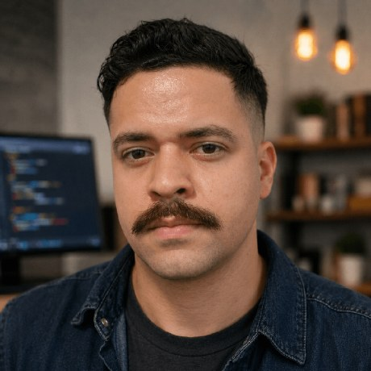

Open Source & Comunidade
O Poder
do Foco
Como código, comunidade e presença em eventos viram carreira.
Matheus Oliveira
/
Luiz Real
São Paulo
Quem fala

@omatheusmesmo
Matheus Oliveira
- Java & Quarkus na Act | BMW
- Oracle ACE, contribuidor no ecossistema Quarkus / Quarkiverse
- Escrevo em blog.omatheusmesmo.dev sobre o "Quarkus Way"
- São Paulo, SP
Quem fala
@lgsreal
Luiz Real
- Forward Deployed Engineer na Arkana
- Oracle ACE e líder do SouJava
- Palestrante internacional, focado em carreira de devs Java
- São Paulo, SP
O ponto
Duas trajetórias que não se parecem em nada.
Projetos diferentes, comunidades diferentes.
Mesmo ponto de chegada.
A tese
Foco.
Não é o volume do que você faz. É a
repetição no mesmo lugar, no código e na comunidade, até associarem
seu nome a alguma coisa.
Onde o foco acontece
Código é metade. Comunidade é a outra.
No código
- Issues e triagem
- Review e documentação
- Pull requests
Na comunidade
- Meetup todo mês, o mesmo
- CFP, palestra, evento
- Mentoria e organização
Quem só escreve código é descoberto por acaso.
Quem aparece é lembrado.
O que você leva daqui
Um caminho, não uma inspiração.
01
Onde contribuir
Um projeto, seis meses. Vale mais que dez PRs espalhados.
02
Onde aparecer
Uma comunidade, presença mensal. Em evento a sua cara vira nome.
03
Como vira carreira
Rastro público no código e no palco. Quem não sabe te descrever não te indica.
Q&A · Golden Questions
Perguntas que a gente quer responder.
- Por que tem gente que contribui há anos e continua invisível?
- O que abriu mais portas: o código ou a comunidade?
- Como mandar o primeiro CFP sem nunca ter palestrado?
- Dá para contribuir sem inglês fluente?
- Quanto tempo por semana muda alguma coisa de verdade?
Bônus
Abrindo um PR ao vivo.
Agora, nesta sala, do zero ao pull request.
good first issue
→
fork
→
branch
→
commit
→
push
→
PR